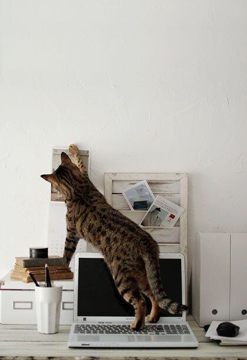

Neko Piano ねこピアノ
(ΦωΦ)
This is Neko Piano site.
ねこピアノのサイトです。

Tweet
Follow @nekopiano
Google+
created by nekopiano, Neko Piano, 猫ピアノ, ねこピアノ, ネコピアノ, (ΦωΦ)
Tweets by @nekopiano
Tweets about "ねこピアノ"
Tweets about "neko piano"